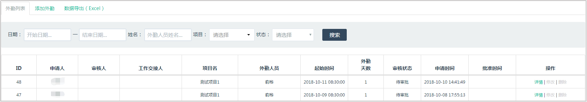

外勤列表
点击【外勤管理】进入外勤列表的页面；

a.点击详情，可以查看外勤详情。
b.点击修改，修改后提交会发出一个修改申请，审批通过，该外勤记录修改成功。
c.点击删除，会发出一个考勤删除的申请，审批通过，该外勤记录将会被删除。
可以使用日期、姓名、项目和状态进行查询；
d.状态分别为：待审批、审批通过、审批驳回和转审批。
添加外勤
点击【外勤管理】进入外勤列表的页面，点击顶部【添加外勤】的标签，进入添加外勤的页面，填写内容，添加外勤申请。
数据导出
点击【外勤管理】进入外勤列表的页面，点击顶部【数据导出】的标签，系统会导出一个考勤列表的Excel文件。